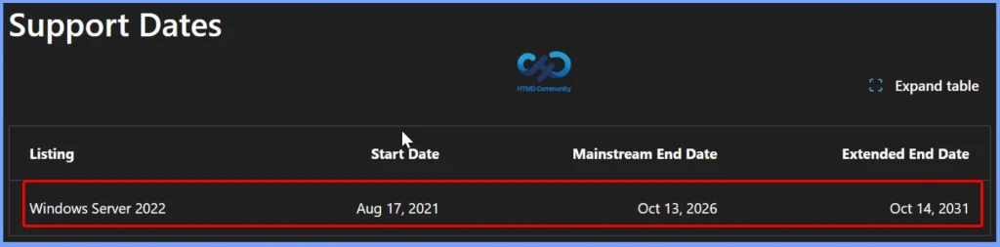

Key Takeaways
- Windows Server 2022 Moves to Extended Support on 13th October 2026
- Windows Server 2022 will reach the end of mainstream support on October 13, 2026.
- Continue receiving monthly security updates at no additional cost until October 14, 2031.
- Hotpatch Support Extended for Azure Edition
- Microsoft recommends planning an upgrade to Windows Server 2025 to benefit from full mainstream support and the latest platform capabilities.
Windows Server 2022 will reach the end of mainstream support on October 13, 2026. The October 2026 security update will be the last update under mainstream support. After this date, Windows Server 2022 will move to extended support and will continue to receive monthly security updates until October 14, 2031. Windows Server 2022 Datacenter: Azure Edition will also get Hotpatch support until October 2027, allowing security updates without restarting the server.
Table of Content
Windows Server 2022 Moves to Extended Support on 13th October 2026 | Plan Your Upgrade to Windows Server 2025
Windows Server 2025 is now the latest LTSC version of Windows Server. Microsoft recommends that organisations start planning their upgrade to Windows Server 2025. IT teams should test their applications and workloads and plan the upgrade early to avoid problems and ensure a smooth transition.

Windows Server 2025 Upgrade Paths: Supported Versions You Can Upgrade From
Microsoft provides supported upgrade paths to Windows Server 2025 from selected older Windows Server versions. Windows Server 2012 R2, Windows Server 2016, Windows Server 2019, and Windows Server 2022 can be upgraded to Windows Server 2025 using supported in-place upgrade paths.
| Upgrade from / to | Windows Server 2012 R2 | Windows Server 2016 | Windows Server 2019 | Windows Server 2022 | Windows Server 2025 |
|---|---|---|---|---|---|
| Windows Server 2012 | Yes | Yes | No | No | No |
| Windows Server 2012 R2 | No | Yes | Yes | No | Yes |
| Windows Server 2016 | No | No | Yes | Yes | Yes |
| Windows Server 2019 | No | No | No | Yes | Yes |
| Windows Server 2022 | No | No | No | No | Yes |
| Windows Server 2025 | No | No | No | No | Yes |
Windows Server Upgrade Methods
Windows Server provides several ways to move to a newer version. The best method depends on your hardware, server roles, and whether you need to keep the existing settings and data. Before any upgrade, always back up your server and important files.
Note: Always take a backup of your server and important files before performing an in-place upgrade, clean installation, or migration to a newer version of Windows Server.
| Method | What it means | When to use |
|---|---|---|
| In-place Upgrade | Upgrade Windows Server on the same server while keeping settings, roles, features, and data. | Best when you want a quick upgrade and your setup supports it. |
| Clean Install | Install the new Windows Server from scratch. | Use for new hardware or when an in-place upgrade isn’t supported. |
| Migration | Move server roles or features from an old server to a new server. | Best when moving to new hardware or migrating specific roles. |
| Cluster OS Rolling Upgrade | Upgrade cluster nodes one at a time while keeping workloads running. | Use for failover clusters when you need high availability. |
| License Conversion | Change the Windows Server edition or license type, such as Standard to Datacenter. | Use when you need to change the server edition or license. |
Need Further Assistance or Have Technical Questions?
Join the LinkedIn Page and Telegram group to get the latest step-by-step guides and news updates. Join our Meetup Page to participate in User group meetings. Also, join the WhatsApp Community and the Whatsapp channel to get the latest news on Microsoft Technologies. We are there on Reddit as well.
Author
Anoop C Nair is Workplace Technology solution architect with 25+ years of experience in global enterprise organizations such as JP Morgan, Capgemini, etc. He is Microsoft Certified Trainer. Microsoft MVP from 2015 onwards for consecutive 11 years! He also conducts Intune and modern workplace tech training for enterprise organizations. He is Blogger, Speaker, and Founder of HTMD Community and HTMD Conference. His focus is on Device Management technologies such as Intune, Windows, Cloud PC. He writes about technologies like Intune, SCCM, Windows, Cloud PC, Windows, Entra, Microsoft Security.